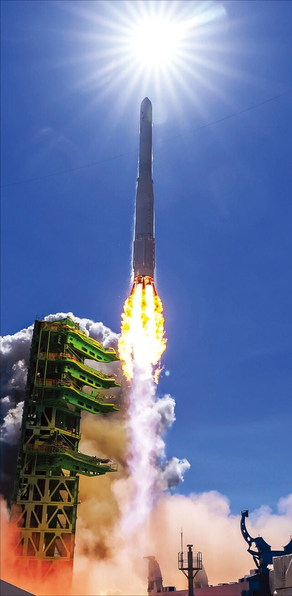

"내 탑재부에 탄두따위는 없어"
"폭약은 단 분리를 위해 단 거지, 지상 목표물 공격용 고폭탄을 탑재한 게 아니야."
"한화에는 대기권 재진입 기술도, 대륙간 탄도 미사일의 유도 기술도 없어."
"더군다나 탑재중량은 최대 3.3톤, F-15K의 1/3도 안 되는 수준이다."
"날 대체 뭐라고 생각하는 거냐."

"내 탑재부에 탄두따위는 없어"
"폭약은 단 분리를 위해 단 거지, 지상 목표물 공격용 고폭탄을 탑재한 게 아니야."
"한화에는 대기권 재진입 기술도, 대륙간 탄도 미사일의 유도 기술도 없어."
"더군다나 탑재중량은 최대 3.3톤, F-15K의 1/3도 안 되는 수준이다."
"날 대체 뭐라고 생각하는 거냐."
이상하다 잘만 하면 탄두 올라 갈꺼 같은데 아씨 아닌가...?
평화의 흰색 이자나 무슨소리들이야
어 그렇지? 잘하자?
지구 궤도를 적당히 돌다 낙하하며 폐기되는 위성이라는 것을 올리기 위한 발사체요
근데 우리가 ICBM 가질 이유가 없지 않나? 해봐야 모스크바 타격?? 베이징, 상해, 산샤댐, 평양은 다 이미 사정권 안이잖아?
한화의 노력은 “지구를 향합니다“
그러니까 3.3톤 핵을 올릴 수 있다는 거네
그정도 핵이면 지구폭발이겠다
??? : 지구를 향하는 기술~
애초에 액체연료임
누리호 "는" 안되고 다음버전은 몰루 ㅋㅋㅋㅋ
미국 공격할것도 아닌데 대륙간탄도미사일을 왜 만듬
3.3톤 텅스텐!
(아직)없어! 없다고!!
육군 시험 발사체가 따로 있다고 이 놈들아!!
걔한테 가서 떠들어!!
대륙간~
"누리호 이 좆ICBM 새끼"
누리호에 탄두 달면 ICBM 되나요?…전문가 답변 보니
-> 누리호를 탄두만 바꿔서 곧바로 ICBM(대륙간탄도미사일)로 사용하는 것은 현실적으로 어렵다고 함.
'누리호' 로는 안돼 ㅜㅜ